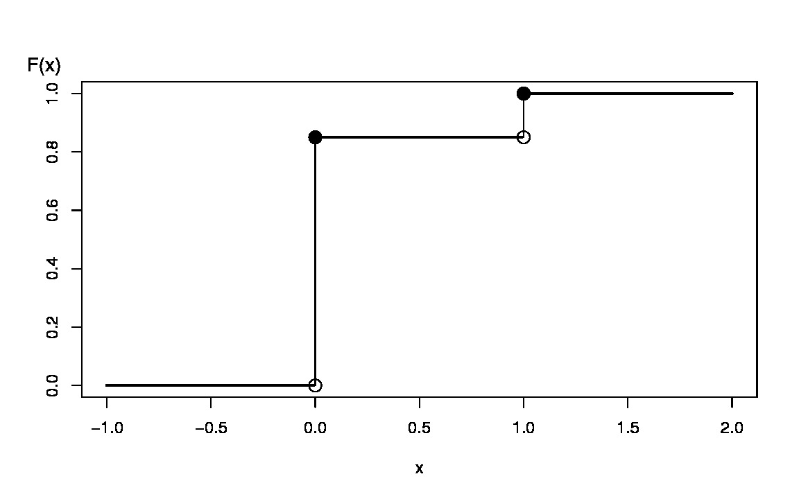
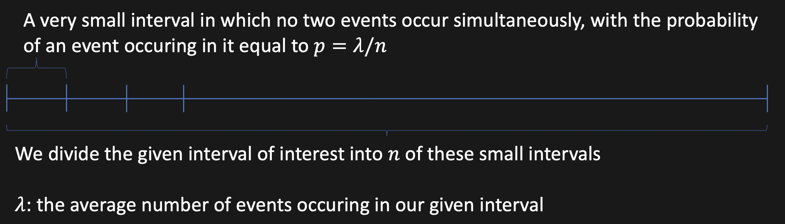

Probability and Statistics
Random Experiment
An experiment for which we cannot predict the outcome in advance.
Example: Coin Tossing
Are they really unpredictable?
In some cases, no! For instance, if we know the exact position of the coin at the moment that it is being flipped, and also we are aware of all the forces having an impact on this procedure, we can exactly predict what is going to happen.
However, we usually have much less knowledge about the experiment and we would like to model the experiment using all we have.
Are they really unpredictable?
In some cases, yes! Quantum mechanical processes are an example of this. Read More: shorturl.at/auJPZ
Remember, we are trying to model the experiment using "ALL WE HAVE"!
Sample Space
The set of all possible outcomes for an experiment
Example: When you toss a coin, the sample space is
\[
\Omega=S=\{\mathrm{Head, Tail}\} \]
Another example: When rolling a dice, we have
\[
S = \{1,2,3,4,5,6\}
\]
In this case, we can consider "the outcome being an odd number" an "event".
Event
An event is a subset of the sample space.
Example: "the outcome being an odd number" is equivalent to having \[E=\{1,3,5\}\]
Obviously we have \[E\subseteq S\]
Probability Function
A function $P:A\mapsto [0,1]$
where $A$ is an event. The following properties should hold for $P$:
-
$\forall A\subset\Omega \quad 0\le P(A)\le 1$
-
$P(\Omega)=1$
-
If $A$ and $B$ are disjoint ($A \cap B=\emptyset$), then we have: $P(A \cup B)=P(A)+P(B)$
Some properties of the probability function
$$P(A^C)=1 - P(A) $$
Proof:
$$(\Omega = A \cup A^C) \land (A \cap A^C = \emptyset)$$ $$\implies 1 = P(\Omega) = P(A \cup A^C) = P(A) + P(A^C)$$
$$\implies 1 = P(A)+P(A^C)$$
Some properties of the probability function
$$P(A \cup B) = P(A)+P(B)-P(A \cap B)$$
Proof:
$$ (i): P(A \cup (B \cap A^C)) = P(A) + P(B \cap A^C)$$
$$ \implies P(A \cup B) = P(A) + P(B \cap A^C) $$
Some properties of the probability function
$$P(A \cup B) = P(A)+P(B)-P(A \cap B)$$
Proof:
$$ (ii): P((B \cap A) \cup (B \cap A^C)) = P(B \cap A) + P(B \cap A^C) $$
$$ \implies P(B \cap A^C) = P(B) - P(A \cap B) $$
Conditional Probability
$$P(A|B) := \dfrac{P(A \cap B)}{P(B)}$$
Note: This is only defined if $P(B)>0$.
Is it really a probability function?
$$ 0 \le P(A \cup B) \le 1 \newline P(B) >0 \newline \implies P(A|B) \in [0,1]$$
$$ \Omega = B \implies P(\Omega|B) = P(B|B) = \dfrac{P(B \cap B)}{P(B)} = 1$$
$$ A_1 \cap A_2 = \emptyset \implies P(A_1 \cup A_2 | B) = \dfrac{P((A_1 \cup A_2)\cap B)}{P(B)} \newline = \dfrac{P((A_1 \cap B) \cup (A_2 \cap B))}{P(B)} = \dfrac{P(A_1 \cap B)+P(A_2 \cap B)}{P(B)} \newline \dfrac{P(A_1 \cap B)}{P(B)} + \dfrac{P(A_2 \cap B)}{P(B)} \newline = P(A_1 | B) + P(A_2 | B)$$
Bayes Theorem
$$P(A|B) = \dfrac{P(B|A)P(A)}{P(B)}$$
Proof:
$$ P(A|B) = \dfrac{P(A \cap B)}{P(B)} \implies P(A|B)P(B) = P(A \cap B) \newline P(B|A) = \dfrac{P(B \cap A)}{P(A)} \implies P(B|A)P(A) = P(A \cap B)$$
Partition of a set
A family of sets $P$ is a partition of $S$ if and only if all of the following conditions hold:
- $\emptyset \notin P$
- $\cup_{X\in P} X = S$
- $\forall A,B \in P \quad A\cap B = \emptyset$
The Law of Total Probability
Assume that $\Omega$ is partitioned into $B_i$'s. Then we have:
$$ P(A) = \sum_i P(A\cap B_i) = \sum_i P(A|B_i)P(B_i)$$
Proof:
$$
A = A \cap \Omega \implies P(A) = P(A\cap \Omega) \stackrel{\text{$ \Omega = \cup_i B_i $}}{\implies}
\newline P(A) = P(A\cap (\cup_i B_i)) = P(\cup_i (A\cap B_i)) \stackrel{\text{$ \forall i,j (A\cap B_i)\cap (A\cap B_j) = \emptyset $}}{=}
\newline \sum_i P(A\cap B_i) = \sum_i P(A|B_i) P(B_i)
$$
Independent events
Two events $A$ and $B$ are called independent if one of these hold:
- $P(B|A) = P(B)$ and $P(A|B)=P(A)$
- $P(A)=0$ or $P(B)=0$
Independent Events
$$
P(A|B) = P(A) \land P(B|A) = P(B)
\newline
\implies P(A\cap B) = P(A|B)P(B) = P(A)P(B)
\newline \implies P(A \cap B) = P(A)P(B)
$$
Independent Events given another Event
$$ P(A|B,C) = P(A|C) \land P(B|A,C) = P(B|C)
$$
Independent Events given another Event
$$
P(A|B,C) = P(A|C) \iff \frac{P(A\cap B \cap C)}{P(B\cap C)} =
\frac{P(A\cap C)}{P(C)}
\newline \iff
\frac{P(A\cap B \cap C)}{P(A\cap C)} = \frac{P(B\cap C)}{P(C)}
\newline \iff
P(B|A,C) = P(B|C)
$$
Chain Rule
$$
P(A_1 \cup A_2 \cup \dots \cup A_k)
=
P(\cup_{i=1}^k) = \newline
\sum_{i=1}^k P(A_i) - \sum_{i,j} P(A_i \cap A_j)
+ \sum_{i,j,k} P(A_i \cap A_j \cap A_k) - \dots
$$
Chain Rule
$$
P(A_1 \cap A_2 \cap \dots \cap A_k)
= \newline
P(A_1)P(A_2 | A_1)P(A_3| A_2, A_1)
P(A_4 | A_3,A_2,A_1) \dots \newline
P(A_k|A_{k-1}, A_{k-2}, \dots, A_1)
$$
Random Variable
A function $X:\Omega\to\mathbb{R}$ which takes an outcome of a random experiment as its input,
and outputs a real number.
Example: $$ X(\mathrm{Heads}) = 0 \newline X(\mathrm{Tails}) = 1$$
Discrete vs. Continuous
If the range of the R.V. is countable, it's called discrete.
If it is uncountably infinite, (usually an interval), it's continuous.
Discrete Random Variable
Experiment: Rolling a dice
For each face $f$, define $X(f)=f+1$
Continuous Random Variable
Experiment: Exploring the Status of the Weather
Random Variable: The Temperature
Note: A random variable actually simplifies the complicated situation of the outcome of an experiment such as the position of the molecules present in the air, the status of the sun, etc.
Probability Mass Function (PMF)
Assume that $R_X$ is the range of an R.V. like $X$.
A function $p_X:R_X\to [0,1]$ for which the following conditions hold:
- $\forall x \quad p_X(x)\ge 0$
- $\sum_{x \in \Omega_X} p_X(x) = 1$
Probability Mass Function (PMF)
$$
X(\mathrm{Heads}) = 0 \quad \land \quad X(\mathrm{Tails}) = 1 \implies R_X = \{0,1\}
\newline
p(0) = \frac{1}{2} \newline
p(1) = \frac{1}{2}
$$
Probability Mass Function vs. Probability Function
PMF: $\quad p:\Omega \to [0,1]$
Probability Function: $\quad \mathbb{P}:F \to [0,1]$
Probability Mass Function vs. Probability Function
PMF: $\quad p:\mathrm{outcome} \mapsto r\in [0,1]$
Probability Function: $\quad \mathbb{P}:\mathrm{event} \mapsto r\in [0,1]$
Cumulative Distribution Function (CDF)
$$
\forall x \in R_X \quad F_X(x) = \mathbb{P}(\{\omega\in \Omega:X(\omega) \le x\}) = \mathbb{P}(X \le x)
$$
CDF is Non-decreasing
-
$\lim_{x\to-\infty} F(x)=0$
Since: $F(-\infty)=\mathbb{P}(X \le -\infty)=0$
-
$\lim_{x\to+\infty} F(x)=1$
Since: $F(+\infty)=\mathbb{P}(X \le +\infty)=1$
-
$x_1 \le x_2 \implies F(x_1) \le F(x_2)$
Question
Assume 1,000,000 people, each paying 10,000 dollars are participating in a game.
At the end, only one person will win, and the reward will be 100,000,000 dollars. Is it wise to participate?
Probability Approach
Experiment: Measuring the change in our money after participating in the game.
Outcome: The amount of change
Random Variable: The amount of change
$X(i)=i \quad \forall i$
We have two cases: 1. Winning 2. Losing
$$
\mathbb{P}(\mathrm{Winning}) = \frac{1}{1,000,000}
$$
If we win, the change will be:
-10,000 + 100,000,000 = 99990000
We have two cases: 1. Winning ~100M 2. Losing 10K
$$
\mathbb{P}(\mathrm{Losing}) = \frac{999999}{1000000}
$$
If we lose, the change will be:
-10,000
We calculate a weighted average of the outcome in these two cases.
The weight of each case is the probability of it.
$$
\sum_{x \in R_X} x\mathbb{P}(x) = \newline 99990000\times \frac{1}{1000000} + (-10000)\times \frac{999999}{1000000}
\newline = -9900
$$
So, on average, we will lose!
Expected Value of a Discrete R.V.
$$
E(X) = \sum_{x\in \mathrm{Range}(X)}x\mathbb{P}(X=x)
$$
Example
$$
X: \mbox{the result of rolling a die}
\newline
Y: 3X+1
\newline
E(Y)=\sum_{y\in R_Y}\mathbb{P}(Y=y)y \newline = \frac{1}{6}(4+7+10+13+16+19) = \frac{23}{2}
$$
Note that $4=3*1+1$, $7=3*2+1$, $\dots$
Expected Value of a Linear Transformation of a R.V.
$$
Y=aX+b \implies E(Y)=aE(X)+b
\newline
E(X)=\sum x\mathbb{P}(X=x)
\newline
Y=aX+b \implies E(Y)= \sum (ax+b)\mathbb{P}(Y=ax+b) \newline = \sum (ax+b)\mathbb{P}(X = x)
= \sum ax \mathbb{P}(X = x) + \sum b \mathbb{P}(X = x)
\newline
= a \sum x \mathbb{P}(X=x) + b \sum \mathbb{P}(X=x) = aE(X)+b
$$
Variance
$$
Var(X) = E(X-E(X))^2 = \sum_{x\in R_X}(x-E(X))^2 \mathbb{P}(X=x)
$$
Why the power of 2?
$E(X) \mbox{ is constant} \newline \implies E(X-E(X))=E(X)-E(X)=0$
Example
The variance of $X$ being the result of rolling a die
It is $\frac{70}{24}$, and this shows how much the result can get further from its expected value!
Standard Deviation
$$
\sqrt{Var(X)} = SD(X)
$$
Note: The variance is not in the same unit of measurement as the original data. Hence, SD is needed.
Variance - Another Formula
$$
Var(X) = E[(X-E(X))^2] = \sum_{x\in R_X}\mathbb{P}(X=x)(x-\mu)
\newline
= \sum \mathbb{P}(X=x)(x^2+\mu^2-2x\mu)
\newline
=\mu^2\sum\mathbb{P}(X=x)-2\mu\sum x \mathbb{P}(X=x) + \sum x^2 \mathbb{P}(X=x)
\newline
= \mu^2-2\mu^2+E(X^2)
\newline
\implies Var(X) = E(X^2)-E(X)^2
$$
Variance of Linear Combination of a R.V.
$$
Var(aX+b) = E[(aX+b-a\mu-b)^2] = E[a^2(X-\mu)^2] \newline = a^2E[(X-\mu)^2] = a^2 Var(X)
$$
Meaning of a Discrete Distribution
A function distributing the probability between the various cases
Recap: That was called a Probability Mass Function which gave a probability for the occurence of each outcome of a discrete random variable
Well-known discrete distributions
Bernoulli Distribution
$$
X(\mathrm{success}) = 1
\quad X(\mathrm{failure}) = 0
$$
$$
\begin{cases}
\mathbb{P}(X=1) = p \newline
\mathbb{P}(X=0) = q = 1-p
\end{cases}
\implies X \sim \mathrm{Bernoulli}(p)
$$
Example: The outcome of tossing a coin
$$
E(X) = 0*(1-p) + 1*p = p
$$
$$
Var(X) = E(X^2) - (E(X))^2 \newline = [0^2*(1-p) + 1^2*p] - p^2
\newline
= p-p^2 = p(1-p) = pq
$$
Cumulative Distribution Function

Binomial Distribution
Repeat a Bernoulli Experiment $n$ times
Define $Y$ as the number of times we succeed
$$
\mathbb{P}(Y=k) = {n\choose k}p^k (1-p)^{n-k} \quad 0 \le k \le n
\newline \implies Y \sim \mathrm{Binomial}(n,p)
$$
Define $X_i$'s as the outcomes of $n$ independent Bernoulli Experiments
$$
E(X_1 + X_2 + \dots + X_n) = E(X_1) + E(X_2) + \dots + E(X_n)
\newline
Y=X_1 + X_2 + \dots + X_n
\implies E(Y) = \sum_{i=1}^n E(X_i) = np
\newline Var(Y) = Var(X_1) + Var(X_2) + \dots + Var(X_n)
\newline \implies Var(Y) = npq
$$
Geometric Distribution
Assume that we repeat the Bernoulli experiment again and again.
Let $p$ be the probability of success, and $1-p$ be that of failure for each experiment.
How many times should we do this until we succeed?
Q: What is the probability of being successful at the $k$'s experiment for the first time?
Geometric Distribution
$X$: the index of the first time we succeed while repeating a Bernoulli experiment
$$
\mathbb{P}(X=k) = (1-p)^{k-1} p
\newline
E(X) = \sum_{k=1}^\infty k(1-p)^{k-1}p
$$
Geometric Distribution
$$
E(X) = 1\times p + 2\times(1-p)^1 p + 3\times (1-p)^2 p + \dots
\newline
= [p + (1-p)p + (1-p)^2 p + \dots] \newline + [(1-p)p + (1-p)^2 p + \dots] \newline + [(1-p)^2 p + (1-p)^3 p + \dots] + \dots
\newline
= \frac{p}{1-(1-p)} + \frac{p(1-p)}{1-(1-p)} + \frac{p(1-p)^2}{1-(1-p)} + \dots
$$
Geometric Distribution
$$
E(X) = 1 + \frac{p(1-p)}{p} + \frac{p(1-p)^2}{p} + \dots
\newline
= 1 + \frac{\frac{p(1-p)}{p}}{1-(1-p)} = 1 + \frac{1-p}{p} = \frac{p+1-p}{p} = \frac{1}{p}
$$
Hypergeometric Distribution
Assume we have $N_1$ red balls and $N_2$ blue balls inside a bag. We take $n$ balls out of the bag.
What is the probability of $x$ balls being red?
$X$: the number of red balls we take out of the bag
$$
\mathbb{P}(X=x) = \frac{{N_1 \choose x}{N_2 \choose {n-x}}}{{N_1+N_2}\choose n}
$$
Hypergeometric Distribution
$$
X_i :=
\begin{cases}
1 \quad \mathrm{red} \newline
0 \quad \mathrm{blue}
\end{cases}
\implies X = X_1 + X_2 + \dots + X_n
\newline
E(X) = E(X_1) + E(X_2) + \dots + E(X_n) = n(\frac{N_1}{N_1+N_2})
$$
Poisson Distribution
Assume that you are standing on a street watching the cars.
Also, assume that the drivers are not aware of what you are doing, and are independently driving their cars.
Moreover, assume that the time between the arrivals of the cars has a fixed rate.
Each time a car passes by, you press a button.
After a fixed amount of time, count the times you have pressed the button.
Poisson Distribution
Q: What is the probability that we see $k$ cars in a fixed amount of time?

$$
\mathbb{P}(X=k) = \lim_{n \to \infty} {n \choose k}(\frac{\lambda}{n})^k (1-\frac{\lambda}{n})^{n-k}
\newline
\lim_{n\to \infty} \frac{n!}{k! (n-k)!} \frac{\lambda ^ k}{n ^ k}(1-\frac{\lambda}{n})^n
$$
$$
\mathbb{P}(X=k) = \lim_{n \to \infty} {n \choose k}(\frac{\lambda}{n})^k (1-\frac{\lambda}{n})^{n-k}
\newline
\lim_{n\to \infty} \frac{n!}{k! (n-k)!} \frac{\lambda ^ k}{n ^ k}(1-\frac{\lambda}{n})^n
\newline
\lim_{n \to \infty} \frac{\lambda^k}{k!}\frac{[n(n-1)(n-2)\dots(n-k+1)]}{n^k}(1-\frac{\lambda}{n})^n (1-\frac{\lambda}{n})^{-k}
\newline
\lim_{n \to \infty} \frac{\lambda ^k}{k!}[1.(1-\frac{1}{n})(1-\frac{2}{n})\dots (1-\frac{k+1}{n})] (1-\frac{\lambda}{n})^n (1-\frac{\lambda}{n})^{-k}
$$
$$
\lim_{n \to \infty} \frac{\lambda ^k}{k!}[1.(1-\frac{1}{n})(1-\frac{2}{n})\dots (1-\frac{k+1}{n})] (1-\frac{\lambda}{n})^n (1-\frac{\lambda}{n})^{-k}
\newline
= \frac{\lambda^k}{k!} \times 1 \times e^{-\lambda} \times 1^{-k} = \frac{\lambda^k}{k!}e^{-\lambda}
\newline \implies \mathbb{P}(X=k) = \frac{e^{-\lambda} \lambda^k}{k!}
$$
Poisson Distribution
$X$: The number of events occuring in a given time interval
$\mathbb{P}(X=k) = \frac{e^{-\lambda} \lambda^k}{k!} \implies X \sim \mathrm{Poisson}(\lambda)$
Note: $E(X)=\lambda \quad$ (Proof: Google!)
Linear Property of Expected Value
$$
E(aX+b)=aE(X)+b \quad g(X):=aX+b
\newline
E(aX+b)=E(g(X))=\int_{-\infty}^{\infty}(ax+b)f_X(x)dx
\newline = \int ax f_X(x)dx + \int b f_X(x)dx \newline = a\int x f_X(x)dx + b \int f_X(x)dx = aE(X) + b
$$
Linear Transformation Impact on Variance
$$
Var(aX+b) = E[(aX+b-a\mu -b)^2]\newline = E(a^2 (X-\mu)^2) \newline = a^2 E[(x-\mu)^2] = a^2 Var(X)
$$
Normal Distribution
Assume you have a coin. Toss it for a lot of times, and calculate the mean.
Repeat this experiment many times.
The set of the means you calculate follow a distribution.
Normal Distribution
If we have a lot of independent random variables all following a same distribution,
the sum (or mean) of them follows a Normal (Gaussian) Distribution.
$$
X_i\mbox{'s are independent and follow the same distribution}\newline \implies X_1 + X_2 + \dots + X_n \sim \mathcal{N}(\mu, \sigma^2)
$$
Normal Distribution
$$
X \sim \mathcal{N}(\mu, \sigma^2) \implies f_X(x)= \frac{1}{\sqrt{2\pi \sigma^2}} e^{-\frac{(x-\mu)^2}{2\sigma^2}}
$$
Standard Normal Distribution
$$
X \sim \mathcal{N}(0, 1) \implies f_X(x)= \frac{1}{\sqrt{2\pi }} e^{-\frac{x^2}{2}}
$$